At a Glance
I analyzed 500 Megaline customers to answer a direct business question: which of two prepaid plans actually generates more revenue? After computing per-user monthly earnings across all usage data, I used statistical testing to confirm the answer with high confidence — giving the marketing team a data-backed basis for their ad spend.
Problem
Megaline offers two prepaid plans — Surf at $20/month and Ultimate at $70/month — and needs to know which plan generates more revenue before committing advertising budget to one over the other. The naive answer is obvious: Ultimate charges more, so it must generate more. But real revenue depends on how customers actually use their plans, not just on the listed price. Surf customers who exceed their included minutes, messages, and data pay overage fees that can push their actual monthly spend well above the base rate. The only way to make a defensible recommendation is to compute what each of the 500 clients in the dataset actually paid month-by-month — calls, texts, internet overages all included — and then test whether the observed revenue difference is statistically significant or just a result of random variation in the sample.
Solution
This project merged five related tables — users, calls, messages, internet sessions, and plan details — to compute per-user monthly revenue across all 500 clients for the full year of 2018. Revenue was calculated by applying each plan's pricing rules to the raw usage data: rounding call duration up to the nearest minute, summing gigabytes used per month, and computing overage charges against plan-included limits before adding the base monthly fee. Behavioral visualizations — barplots, histograms, and boxplots — compared usage distributions across both plans to surface patterns before the statistical test. A Welch two-sample t-test was then applied to test whether the mean monthly revenue difference between Surf and Ultimate users was statistically significant. The result confirmed it was: Surf generated an average of $50.33 per user per month versus $47.31 for Ultimate, with a p-value near zero — the opposite of the intuitive answer, and a finding that could directly redirect advertising spend.
Skills Acquired
- Python — the implementation language for data merging, revenue computation, behavioral analysis, visualization, and statistical testing across the full pipeline.
- Pandas — used to load and merge all five source tables, apply plan pricing rules row-by-row, compute monthly aggregations per user, and prepare the revenue columns used in the hypothesis test. The project's central computation — per-user monthly revenue — required a multi-step Pandas pipeline combining groupby aggregations, conditional calculations, and DataFrame merges.
- NumPy — used for numerical operations underlying the revenue calculations, including rounding, ceiling functions for call duration, and array operations passed to SciPy's test.
- Matplotlib — the visualization library used to produce the barplots, histograms, and boxplots comparing behavioral distributions between Surf and Ultimate users. Visualizing distribution shape and spread before running a statistical test is standard practice — it reveals whether the data meets the assumptions the test requires.
- SciPy — provided the Welch two-sample t-test (
ttest_indwithequal_var=False) used to test whether the revenue difference between plans was statistically significant. Welch's t-test is appropriate here because the two groups have different sample variances and potentially different sizes — more robust than the standard t-test in this setting. - Statistical Analysis — the framework for moving from "it looks like Surf earns more" to "the evidence shows Surf earns significantly more." Statistical analysis separates observed patterns from sampling noise, which is why a p-value near zero is a meaningful business result rather than just a number.
- Hypothesis Testing — the formal structure applied at the end of the analysis. Two null hypotheses were tested: no difference in mean revenue between Surf and Ultimate users overall, and no difference between users in the NY-NJ region versus elsewhere. Framing the business question as a testable hypothesis before looking at the data is what keeps the analysis honest.
The analysis that follows unpacks exactly how that counterintuitive revenue finding emerged — starting with where the data came from and what it required to be usable.
Deep Dive
Megaline is a telecom operator offering two prepaid plans: Surf ($20/month) and Ultimate ($70/month). Their commercial department needs to know which plan generates more revenue — so they can point the advertising budget at the right product.
The ask sounds deceptively simple: compare two plans and make a recommendation. But to give a statistically defensible answer, you need to understand how 500 real clients actually used their plans throughout 2018 — calls, texts, internet sessions — and calculate what each user actually paid before any hypothesis test is meaningful.
The Dataset
Unlike typical single-table EDA projects, this analysis required merging five separate tables to reconstruct what each user paid each month. The data covers the full 2018 calendar year across 500 clients.
| Table | Rows | Key Columns |
|---|---|---|
megaline_calls.csv | 137,735 | user_id, call_date, duration (float) |
megaline_internet.csv | 104,825 | user_id, session_date, mb_used (float) |
megaline_messages.csv | 76,051 | user_id, message_date |
megaline_plans.csv | 2 | plan_name, monthly_fee, limits, overage rates |
megaline_users.csv | 500 | user_id, plan, city, reg_date, churn_date |
The plan definitions are the anchor for every revenue calculation:
| Feature | Surf ($20/mo) | Ultimate ($70/mo) |
|---|---|---|
| Monthly minutes | 500 | 3,000 |
| Monthly messages | 50 | 1,000 |
| Monthly data | 15 GB | 30 GB |
| Overage: per minute | $0.03 | $0.01 |
| Overage: per text | $0.03 | $0.01 |
| Overage: per GB | $10 | $7 |
An important rounding rule: Megaline rounds each individual call up to the next full minute (even a 1-second call = 1 minute billed), and internet data is rounded at the monthly aggregate level (1,025 MB = 2 GB billed). This had to be reflected in the revenue function.
Data Preparation
Step 1
Loading and Type Fixing
All five tables were loaded with a dictionary-based loop using .items()
to avoid repetitive read_csv calls. Date columns across all tables came in as object
dtype and were converted to datetime64
using .astype().
# Load all five datasets with a loop file_paths = { 'Calls': '/datasets/megaline_calls.csv', 'Internet': '/datasets/megaline_internet.csv', 'Messages': '/datasets/megaline_messages.csv', 'Plans': '/datasets/megaline_plans.csv', 'Users': '/datasets/megaline_users.csv', } dfs = {name: pd.read_csv(path, sep=',') for name, path in file_paths.items()} # Fix date columns to datetime64 df_calls['call_date'] = df_calls['call_date'].astype('datetime64') df_internet['session_date'] = df_internet['session_date'].astype('datetime64') df_messages['message_date'] = df_messages['message_date'].astype('datetime64')
Step 2
Enriching the Data
The raw tables record individual events — each row is a single call or message or session. Revenue is calculated per user per month, so the data needed to be aggregated. Key enrichment decisions:
- Call rounding: Each call's duration was rounded up to the next full minute using
np.ceil()before summing monthly totals. - Month extraction: A
year_monthcolumn was added using.dt.to_period('M')to enable monthly groupby aggregation. - Internet rounding: Monthly MB totals per user were converted to GB and rounded up using
np.ceil()at the aggregate — not per-session. - Churn identification: 34 of 500 users had a non-null
churn_date, confirmed as users who ended their plan early.
# Add month column for groupby df_calls['year_month'] = df_calls['call_date'].dt.to_period('M') # Round each call up to the next full minute df_calls['rounded_duration'] = np.ceil(df_calls['duration']) # Monthly total minutes per user monthly_duration = df_calls.groupby(['user_id', 'year_month'])['rounded_duration'].sum()
User Behavior: Calls, Messages, Internet
Before comparing revenue, the analysis characterized how users of each plan actually behaved across the year — using barplots (monthly averages), histograms (distribution shape), and boxplots (spread and outliers).
Calls
Ultimate users talked more — but Surf users were more consistent
Barplots showed both plans followed similar monthly call patterns, but Ultimate plan users averaged more minutes every month. Histograms confirmed call duration distributions were right-skewed for both plans — most calls were short, with a long tail of longer calls. Boxplots revealed Surf plan users had more variability in monthly minute totals, while Ultimate plan users were more predictable.
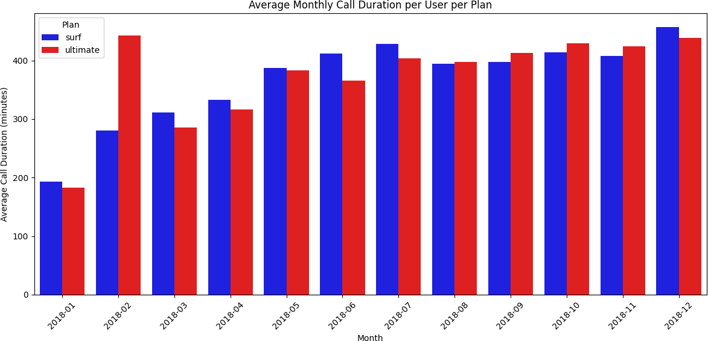
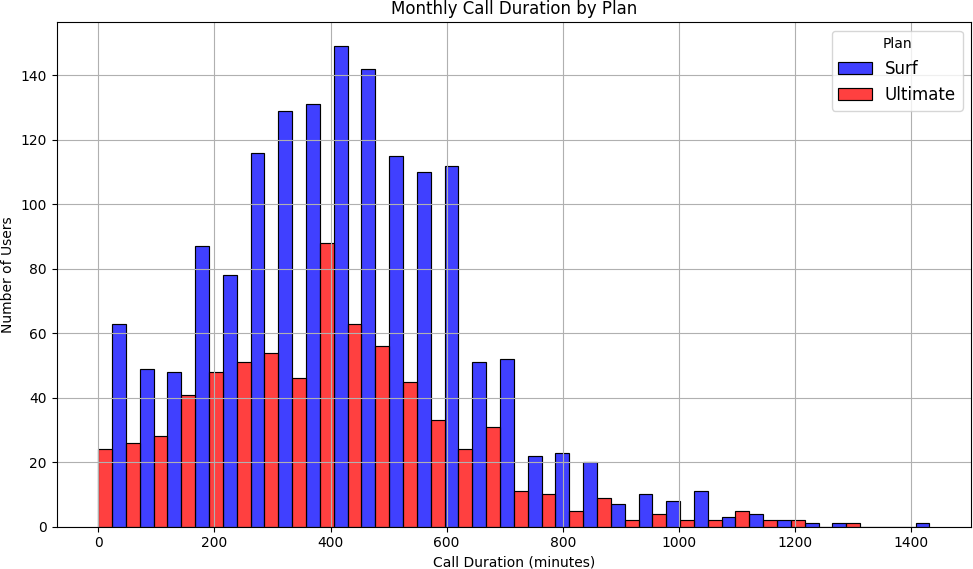
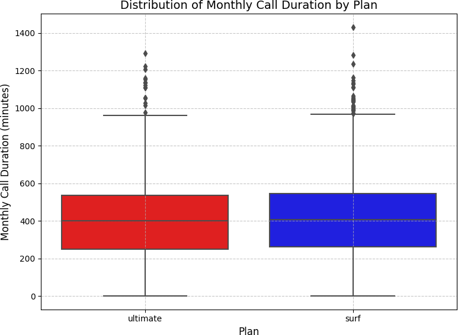
Messages
Both plans showed similar texting behavior
Monthly message counts were similar between plans. Neither group was consistently hitting the included message limits — meaning most users avoided overage charges on texts.
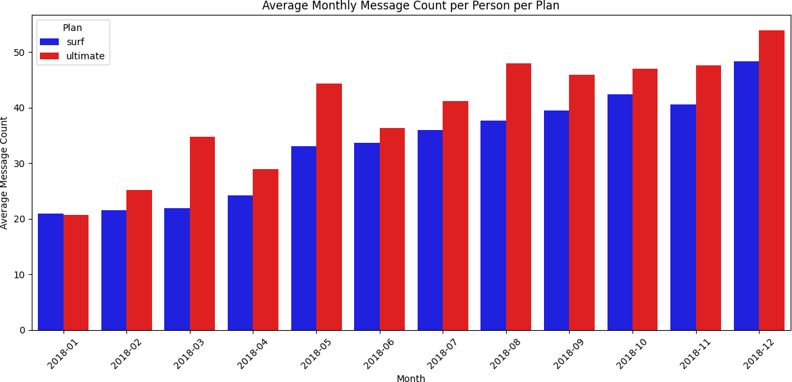
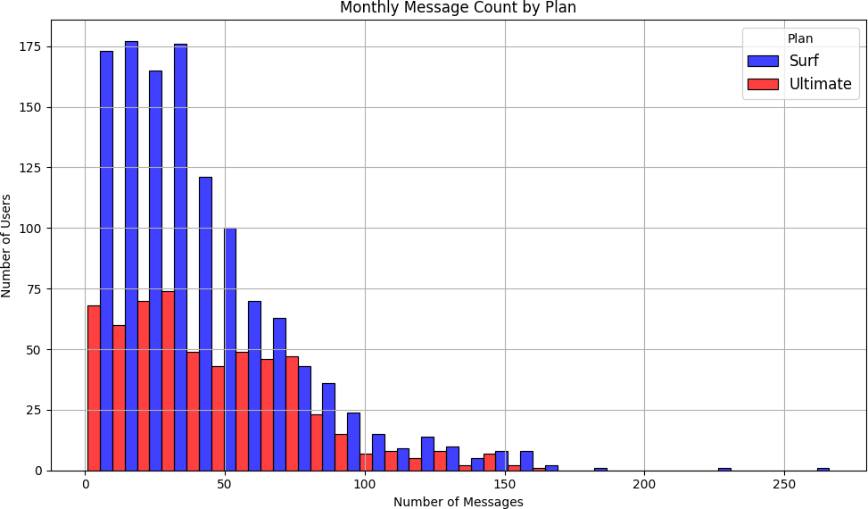
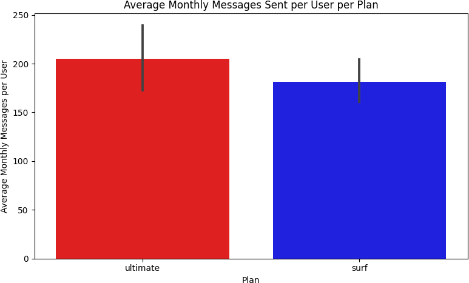
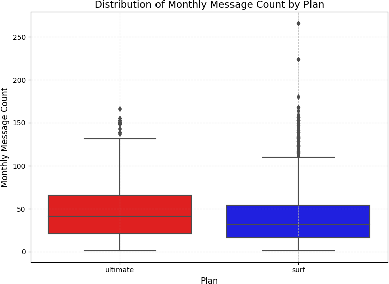
Internet
Ultimate users consumed more data — but the Surf plan was more popular
Barplots showed the Ultimate plan had higher average monthly data usage in every month except June and July. The histogram revealed that most users of both plans consumed between approximately 10,000–28,000 MB per month, with the Surf plan having significantly more users in that range. The boxplot showed median data usage was nearly identical between plans — but Surf plan users had a wider IQR and more extreme outliers (over 70,000 MB), while Ultimate plan users clustered more tightly around the median.
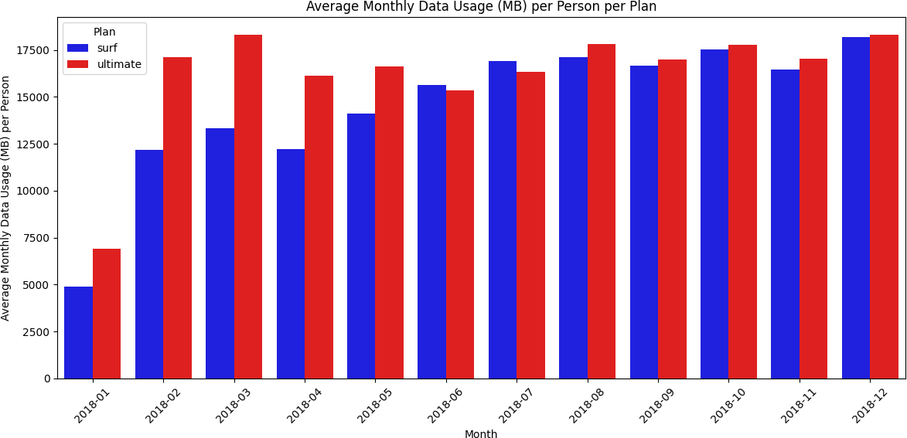
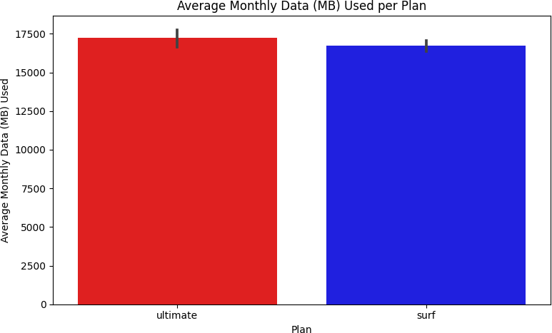
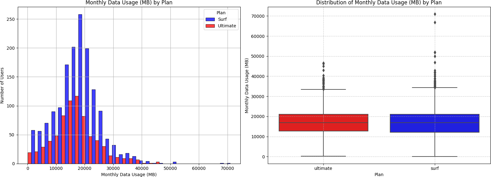
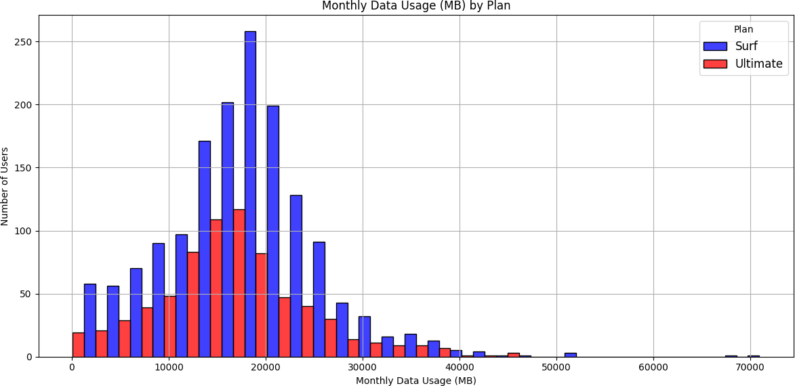
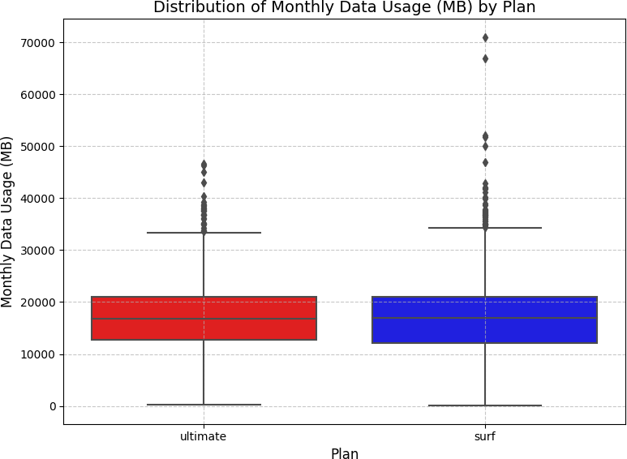
Revenue Analysis
After merging all five tables and building out monthly usage per user, a custom
calculate_revenue()
function computed each user's monthly bill: base charge plus overage fees for minutes, texts,
and data that exceeded plan limits.
def calculate_revenue(row): plan = row['plan'].strip().lower() if plan == 'surf': base_charge = 20.0; call_limit = 500; text_limit = 50 data_limit_mb = 15 * 1024; minute_rate = 0.03; text_rate = 0.03; data_rate = 10 elif plan == 'ultimate': base_charge = 70.0; call_limit = 3000; text_limit = 1000 data_limit_mb = 30 * 1024; minute_rate = 0.01; text_rate = 0.01; data_rate = 7 overage_minutes = max(0, row['total_minutes'] - call_limit) overage_texts = max(0, row['message_count'] - text_limit) overage_data_gb = max(0, np.ceil((row['total_mb_used'] - data_limit_mb) / 1024)) revenue = base_charge revenue += minute_rate * overage_minutes revenue += text_rate * overage_texts revenue += data_rate * overage_data_gb return revenue
The revenue results were striking:
| Plan | User-Months | Avg Revenue/Month | Std Dev | Max Outlier |
|---|---|---|---|---|
| Surf | 1,573 | $50.33 | $55.26 | $578.64 |
| Ultimate | 720 | $47.31 | $11.40 | $157.00 |
The Surf plan had over twice as many user-months (1,573 vs 720) and a higher average monthly revenue per user ($50.33 vs $47.31). The dramatically larger standard deviation for the Surf plan ($55.26 vs $11.40) reveals the behavioral difference: Surf users are unpredictable — some stay within limits, others rack up significant overages. Ultimate users pay $70/month and rarely trigger overages, making them predictable but generating less average revenue.
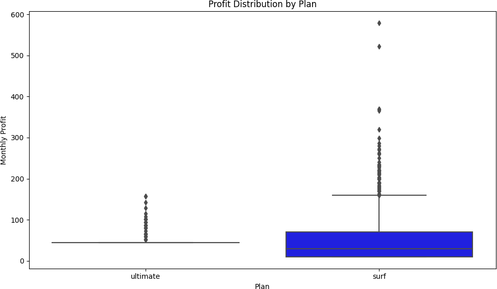
Hypothesis Testing
Two statistical hypotheses were tested using two-sample independent t-tests
(scipy.stats.ttest_ind)
at α = 0.05.
Hypothesis 1
Does average revenue differ between Surf and Ultimate users?
H₀: There is no difference in average monthly revenue between Surf and Ultimate plan users.
H₁: There is a statistically significant difference in average monthly revenue between the two plans.
surf_revenue = merge4[merge4['plan'] == 'surf']['revenue'] ultimate_revenue = merge4[merge4['plan'] == 'ultimate']['revenue'] t_stat, p_value = ttest_ind(surf_revenue, ultimate_revenue) # T-statistic: -8.2288 # P-value: 0.0000 # → Reject H₀: Revenue differs significantly between plans.
With p ≈ 0 (far below α = 0.05), the null hypothesis is rejected. The revenue difference between Surf and Ultimate plans is statistically significant.
Hypothesis 2
Do NY-NJ users generate different revenue than other regions?
H₀: There is no difference in average revenue between users in the New York–New Jersey area and users from other regions.
H₁: NY-NJ users generate statistically different average revenue than users from other regions.
State was extracted from the city field using regex:
merge5['state'] = merge5['city'].str.extract(r'(\w{2})\sMSA').
Of 500 users, 6 were identified in NY or NJ.
ny_nj_revenue = ny_nj_users['revenue'] other_revenue = merge5[~merge5['state'].isin(['NY', 'NJ'])]['revenue'] t_stat, p_value = ttest_ind(ny_nj_revenue, other_revenue) # T-statistic: 0.8945 # P-value: 0.3785 # → Fail to reject H₀: No significant regional revenue difference.
With p = 0.3785 (above α = 0.05), there is no statistically significant difference in average revenue between NY-NJ users and users from the rest of the country. Geography is not a meaningful predictor of revenue in this dataset.
Conclusion & Recommendation
The statistical evidence is clear: the Surf plan generates more revenue per user per month than the Ultimate plan ($50.33 vs $47.31), has over twice as many active users, and the revenue difference is statistically significant (p ≈ 0). The advertising department should allocate more funding to promote the Surf plan.
The higher revenue from Surf comes from a simple mechanic: the lower base price attracts more subscribers, and the lower included limits mean more users generate overage charges — at rates higher than the Ultimate plan's overage rates. The Ultimate plan's predictability (low std deviation) is a business liability, not an asset — it caps revenue at $70/month with little upside.
Regional analysis found no geographic revenue variation, suggesting national-level advertising strategy is appropriate without region-specific adjustments.
What I Learned
- SDA rigor matters for business decisions: A naive comparison of plan prices would suggest Ultimate generates more revenue. The actual analysis showed the opposite — but only because of thorough usage-based revenue modeling.
- Data rounding has real financial impact: The per-call rounding rule significantly affects total billed minutes. Missing this in the revenue function would have produced incorrect overage calculations.
- Reading code is as important as writing it: A key insight from this sprint — understanding what existing code does before writing new code makes you faster and avoids introducing bugs.
- Visualizations guide hypothesis formation: The boxplot initially appeared to favor the Surf plan on data usage, while the histogram and barplot told the opposite story. Using all three visualization types together gave a complete picture.